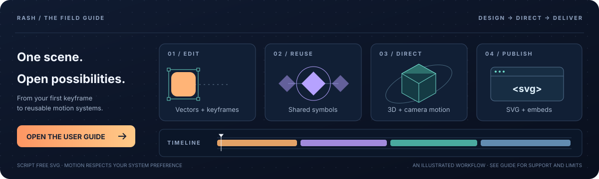

Your animations.
Your AI workspace.
Create, edit and export Rash projects through ChatGPT or a local Claude plugin. The interactive SVG workspace brings playback, frame seeking and layer controls to a compatible MCP Apps host.
The hosted demo requires an authorized account. This public GitHub Pages site serves the studio and documentation; authenticated MCP tools run on the private service.

ChatGPT and hosted MCP
Use the connected Rash SVG Studio plugin, then ask:
Create a 3D animation in Rash.
Render frame 17, change the torus color,
save it, and export animated SVG.Authenticated endpoint
https://rash-svg-studio.ruv.chatgpt.site/mcpHosting manages OAuth and access. Knowing this URL does not grant access. Install and connect Rash SVG Studio when it is made available to your account.
Local Claude plugin
Requires Node.js 22 or newer and Git. In Claude Code:
/plugin marketplace add ruvnet/Rash
/plugin install rash@rash-toolsFor a standalone stdio server:
git clone https://github.com/ruvnet/Rash.git
cd Rash
npm run mcpConfigure your MCP client to run node /absolute/path/Rash/mcp/server.mjs. The default store is ~/.rash/projects; override it with RASH_MCP_STORE.
Seven tools. One scene format.
| Tool | What it does |
|---|---|
rash_project_create | Create a validated scene from a template or complete project. |
rash_project_list | List your saved animations and revisions. |
rash_project_get | Read a project before editing it. |
rash_project_update | Save changes using the expected revision; stale edits are rejected. |
rash_project_delete | Permanently delete a project after checking its revision. |
rash_render | Render a specified frame from an exact saved revision. |
rash_export | Export JSON, still SVG, animated SVG or an HTML embed. |
From conversation to composition
- Create an animation from Orbital motion, 3D dimension or a blank scene.
- Play and seek frames. Edit its name, layer position or fill, then save.
- Download project JSON to continue in the full studio, including shared symbols, camera tracks, masks and motion curves.
- Export portable SVG or an embed. Use the full studio for browser dependent GIF, MP4, PNG and PDF output.
Browser autosave, local MCP storage and hosted MCP storage are separate. Transfer projects explicitly with JSON. Deleting an MCP project is permanent; download a backup first.
Verified, with clear boundaries
145 unit tests and nine MCP interface checks in each of Chromium and WebKit passed for v0.6. All seven hosted tools were also exercised through a connected ChatGPT plugin. Browser tests cover mobile edits, deletion, exports, conflicts and host result handling.
Native host visual acceptance and live Claude acceptance remain separate checks. Full Flash and ActionScript compatibility is still in development.